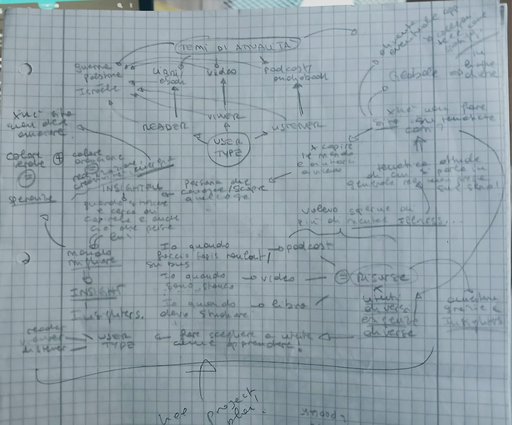
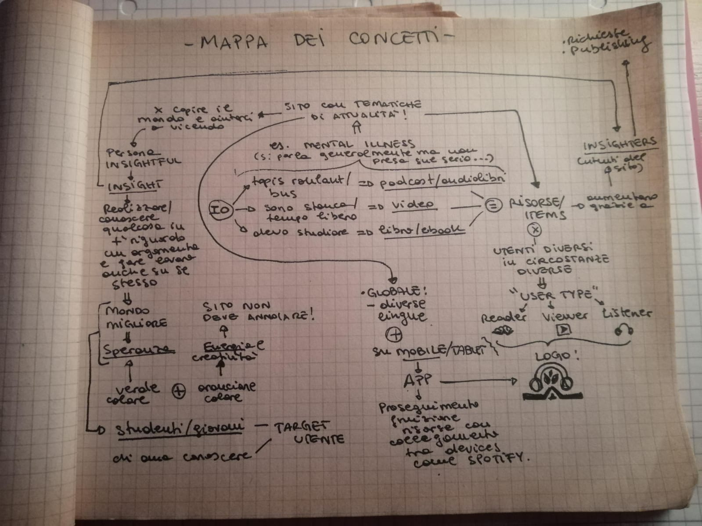
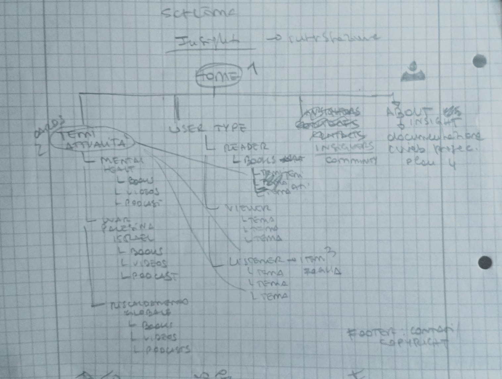
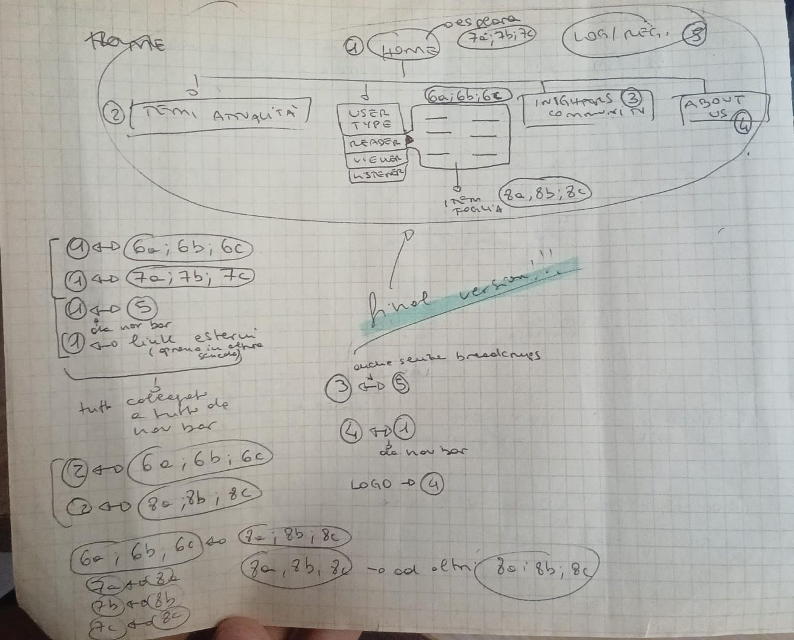
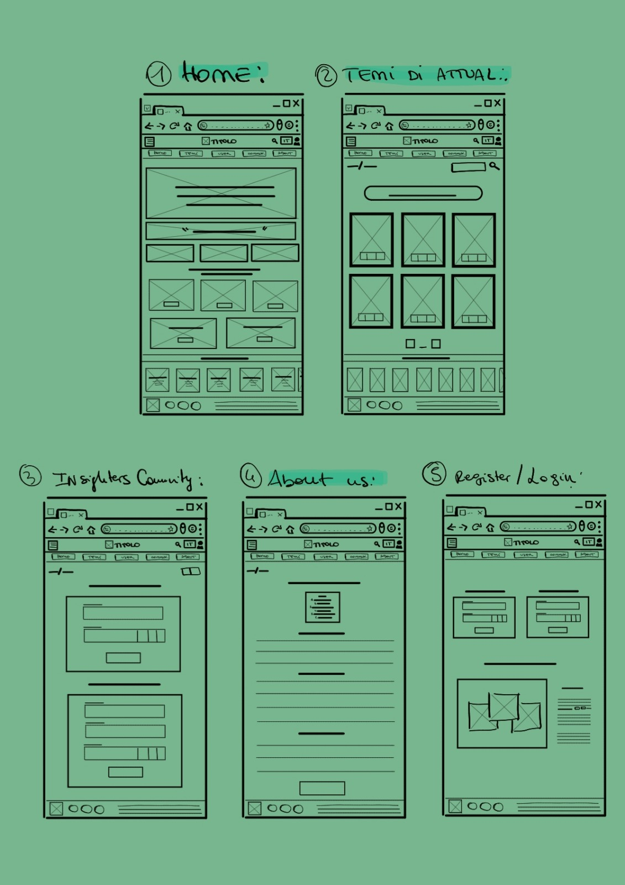
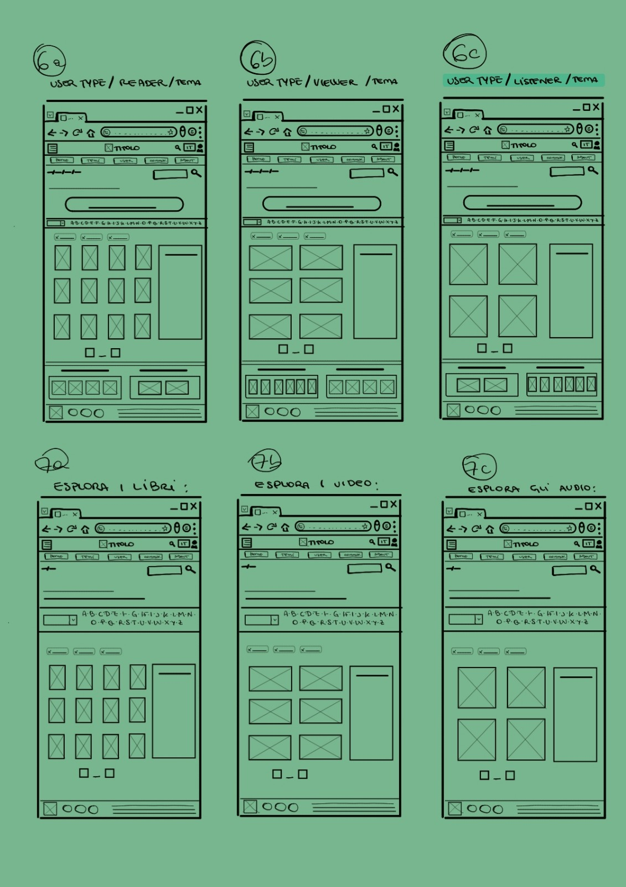
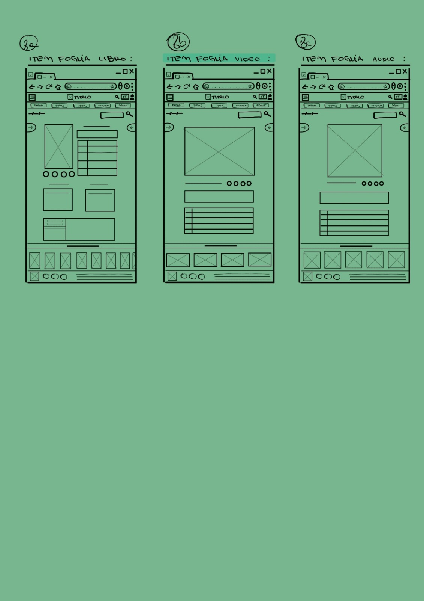
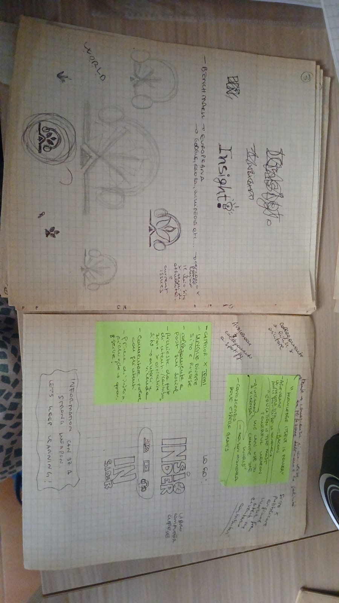

Documentazione
[Idea]:
L’idea nasce proprio dalla parola Insight che rappresenta << In psicologia, la capacità di vedere dentro una situazione, o dentro sé stessi […]>>(cit. Treccani)
Nasce dalla speranza di poter riuscire a riconnettere le persone tra di loro e con il mondo in cui vivono, da un punto di vista umano ed empatico, sottolineando l’importanza della conoscenza e la capacità di riuscire a distinguere le informazioni vere da quelle false. Si tratta di uno strumento molto importante, capace di rendere il mondo un posto più bello e vivibile per tutti.
1. Brief
Obiettivi, finalità, scopo:
L’obiettivo di Insight è quello di fornire, sottoforma di biblioteca digitale, una collezione di risorse che variano tra libri, video e podcast che trattano di temi di attualità e vuole permettere all’utente di poter scegliere la modalità in cui egli vuole imparare. Ci sono persone che preferiscono conoscere leggendo, altre che preferiscono guardare dei video sull’argomento e altre ancora che invece desiderano ascoltare sul riguardo.
Quante persone hanno lunghe liste di cose che vogliono guardare, leggere, ascoltare ma che nel momento del bisogno si scordano di averle create e perdono tempo cercando di reperire i contenuti desiderati? Insight provvede a fornire queste “liste” in formati diversi, categorizzate per tematica di attualità; all’utente manca solo di scegliere la modalità e imparare!
L’obiettivo principale di Insight è sensibilizzare le persone sui temi di attualità nel mondo e aiutarle a conoscere cosa succede veramente attorno ad essi. Vuole insegnare le persone a sviluppare una mente critica e mettere in dubbio le notizie che girano sui social o altre piattaforme simili. L’obiettivo è raggiunto nel momento in qui l’utente usufruisce delle risorse del sito, in quanto vuol dire che molto probabilmente ritornerà alle mansioni della sua vita quotidiana ma con un nuovo Insight in più su un certo argomento e potrà farne buon uso nella sfera personale e pubblica.
Utente tipo:
Insight in origine è stato pensato per tutti coloro che amano conoscere e vogliono approfondire le realtà che convivono nel mondo.
Se vogliamo andare nel particolare, Insight è un sito che piacerà in particolare modo agli studenti in preparazione della maturità, in quanto nella prova finale viene sempre chiesto di scrivere di un argomento di attualità; inoltre, anche per gli studenti universitari in preparazione della tesi, può risultarsi uno strumento importante se l’argomento della tesi combacia con uno dei temi trattati, in quanto lo studente universitario si ritroverà davanti a fonti di tipo diverso sul suo argomento, sullo stesso sito invece di dover navigare su siti diversi aperti tutti insieme!
Riassumendo: il sito è pensato per utenti che vanno da studenti delle scuole superiori, studenti universitari a senior, con maggiore attenzione all’agevolazione del fornimento della conoscenza agli studenti in quanto “i giovani sono il futuro” e vogliamo che crescano con conoscenze riguardo il mondo intero, così da poter contribuire al suo miglioramento nel tempo.
2. Benchmark
Esistente e Competitors:
- Europeana.eu: Fornisce una esplorazione per temi ma sono molto incentrati su musica e arte piuttosto che letteratura e tematiche specifiche riguardo il mondo.
- Spotify: fornisce podcast e audiobook per gli ascoltatori su tematiche di attualità ma non sono organizzati per categorie a sé ma sono episodi facenti parte di una serie e il più delle volte sono difficilmente filtrabili subito.
- Youtube: fornisce molti video interessanti su tematiche di attualità che bisogna cercare bene e sono comunque sempre mescolati a video di altro genere che piacciono all’utente. È uno spazio omogeneo che porta a distrarsi facilmente dall’obiettivo principale (qualsiasi esso sia).
- Biblioteche digitali e siti di librerie: I libri/ebook sono sempre categorizzati per genere, hobby, materia, tipo documento, età utente, autore, anno etc. ma mai per tematica (attuale) che appare solo dopo averla cercata nei filtri di ricerca (es. Opac, Libraccio, Feltrinelli, Google Scholar etc.).
La maggior parte delle piattaforme si concentrano su un unico formato della risorsa mentre Insight vuole fare dialogare risorse di tipo diverso, fornire all’utente la scelta della modalità di fruizione della conoscenza ma anche fare scoprire modalità di apprendimento nuove e divertenti.
Insight è il primo sito che categorizza i propri item, ognuno, per temi di attualità specifici e fornisce ai propri utenti risorse di formati diversi come libri/ebook, video e podcast/audiobook, tutte nello stesso sito. Inoltre, è il primo sito che fornisce all’utente di decidere la modalità di fruizione delle risorse scegliendo tra reader, viewer e listener in “tipo utente”. Infine, per chi diventa un Insighter (crea account) avrà la possibilità di pubblicare le proprie opere riguardo una determinata tematica oltre che a richiedere nuove risorse e tematiche da inserire nel sito; potrà gestire una libreria personale dove inserire le risorse di cui ha fruito dal sito e collegare dispositivi e le conseguenti applicazioni correlate per agevolare la fluidità della conoscenza.
3. Struttura
Mappa Concettuale:
 Schema delle dipendenze:
 Categorie di un item foglia:
"title", "creator", "subject", "description", "publisher","date", "type", "format", "identifier", "source", "language", "coverage", "rights"
4. Layout
Architettura e Wireframes:
  Logo:
5. Usabilità
Efficacia e chiarezza: consistenza nel font, colori e organizzazione
Tipografia: Arial, sans-serif
Web Grafica: #f2f2f2; #8fbc8f; #fff
6. Servizi
Strumenti di browsing: ricerca per lettera, ricerca per filtri, ricerca ipertestuale da metadati, etc.
Strumenti di interazione: hover, slider, carousel, etc. --> HOW TO: menu dropdown, bottoni, tavola per metadati, immagini, filtri ricerca etc.
7. Bibliografia
W3SCHOOL: tutorial HTML, CSS; EUROPEANA: ispirazione home, item foglia, CARD HOW TO, SEARCHBAR, ; ANIWAVE: navbar dopdown-left; CHATGPT: problem solving, barra ricerca per lettera; PINTEREST: icone e view; YOUTUBE: Tutorial Navbar con menù a tendina, Tutorial footer by YT CODE OPACITY, Banner tutorial by MR. WEB DESIGNER; HOME QUOTE SLIDE BY ANNA BLOK. ; DEEPAI.ORG: banner immagine home; RGB- Encyclopedia.com e HTMLCOLORCODES.COM; home cards icon by flaticon.com; carousel home by CODINGTORQUE.COM; IMMAGINI TEMATICHE by google immagini; GRID CARDS TEMATICHE: medium.com;